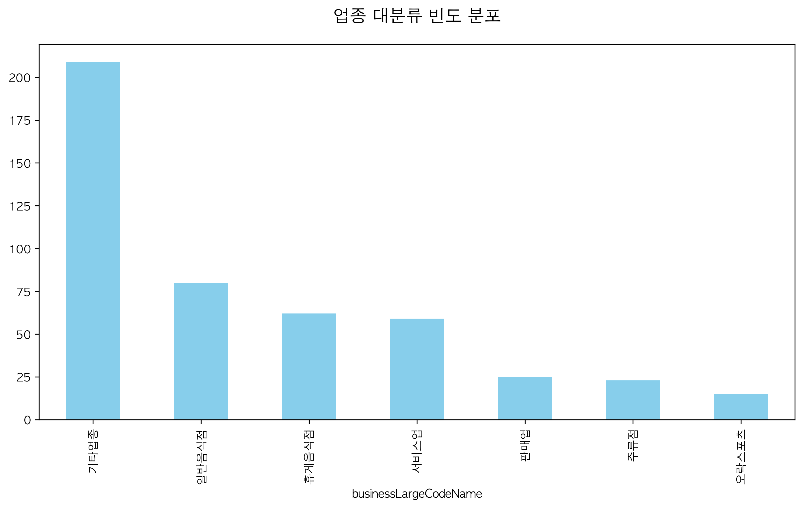
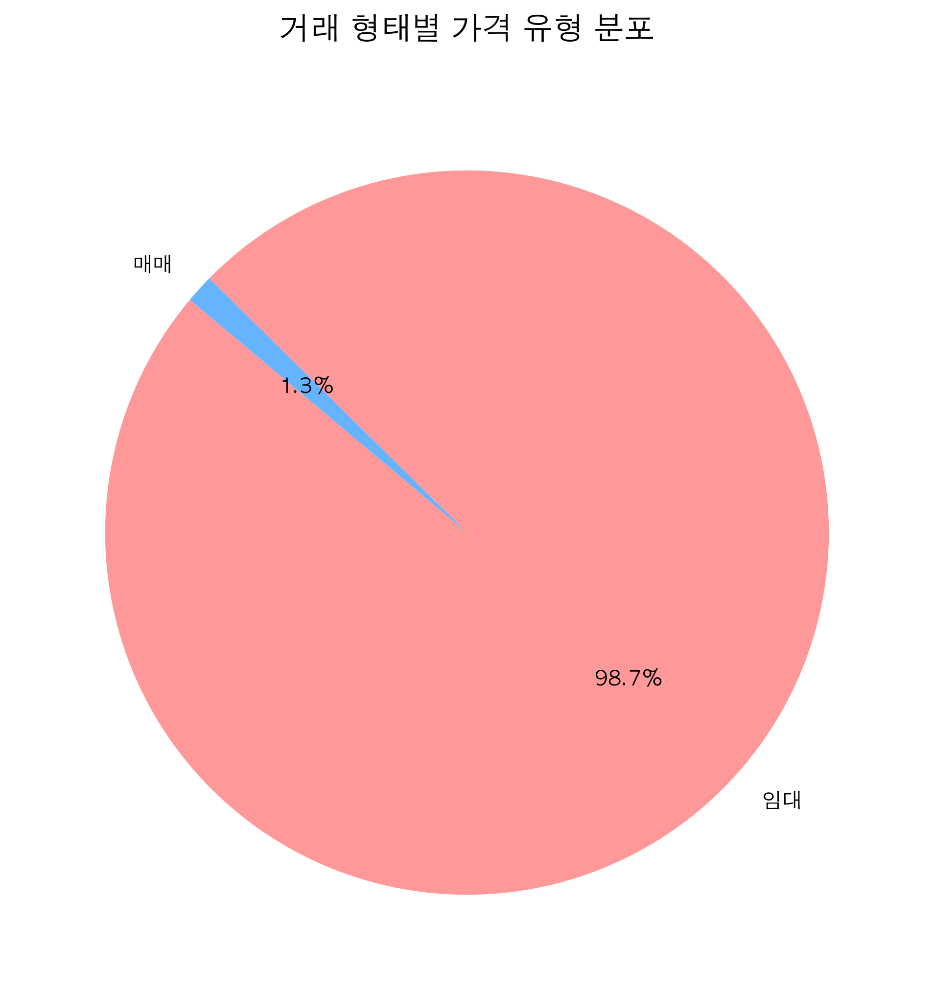
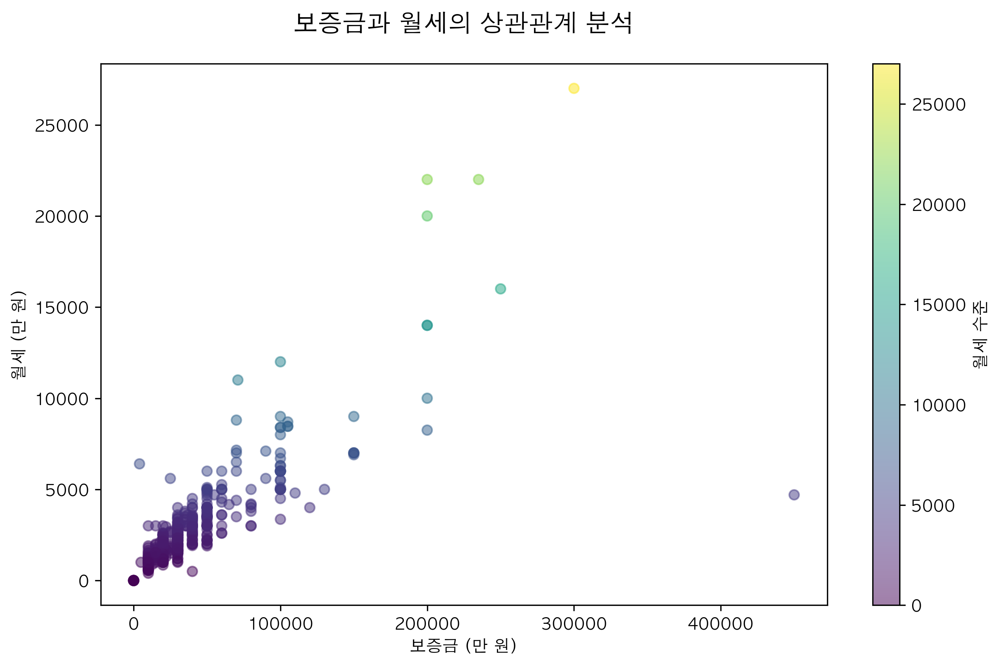
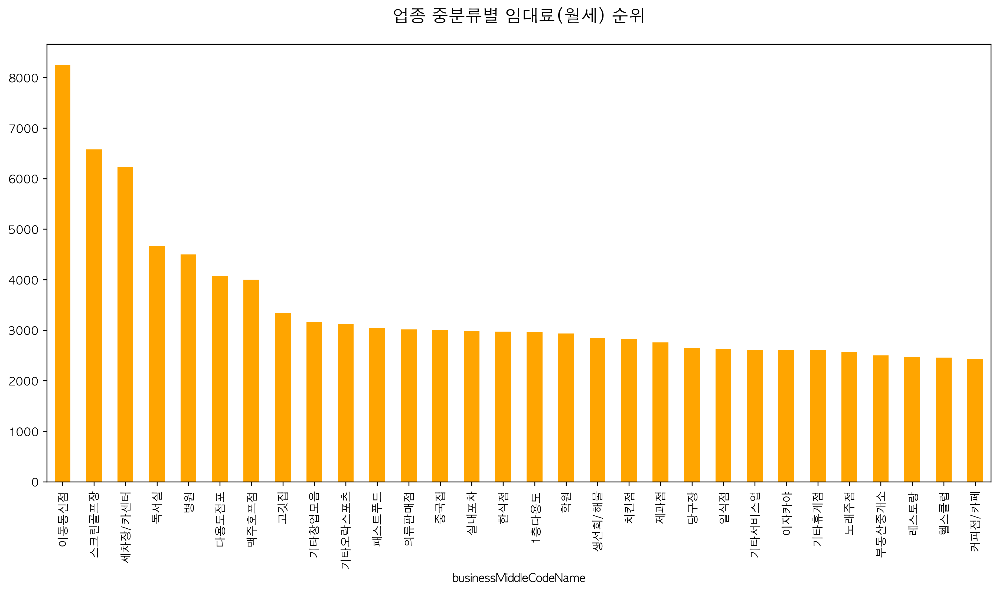
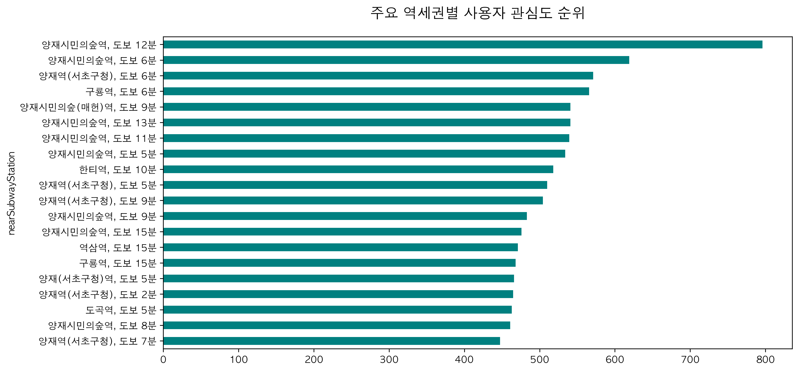
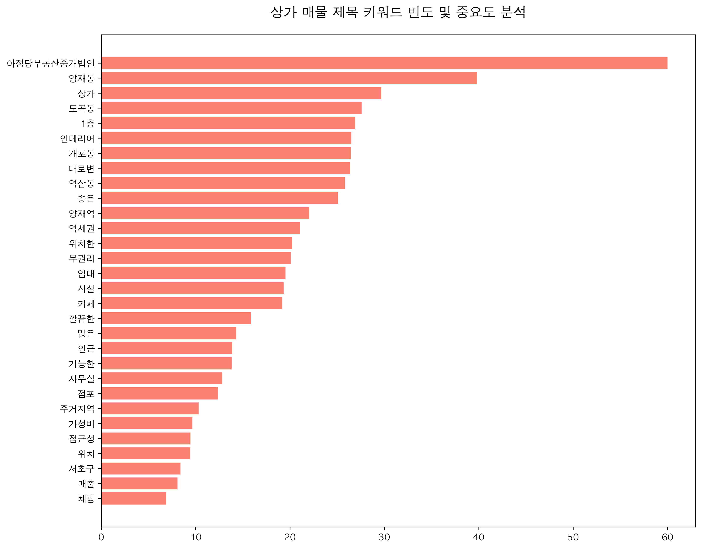

핵심 시각화 지표
업종 대분류 빈도 분포

* 기타업종을 제외하면 일반음식점과 휴게음식점이 상권의 중심축을 형성하고 있습니다.
거래 형태별 가격 유형 분포

* 현재 시장의 거래 형태는 98.7%가 임대차 계약으로 이루어져 있습니다.
보증금과 월세의 상관관계

* 보증금과 월세는 약 0.81의 강한 양의 상관관계를 보이고 있습니다.
업종 중분류별 평균 월세

* 이동통신점, 스크린골프장 등 고수익 업종이 상위권을 차지합니다.
주요 역세권별 관심도

* 양재시민의숲역과 양재역 인근 도보 10분 내 매물의 인기가 가장 높습니다.
키워드 TF-IDF 분석

* '무권리', '인테리어', '역세권'이 임차인을 유혹하는 3대 핵심 키워드입니다.
종합 비즈니스 통찰
1. 시장 구조의 본질: 초양극화
서울 강남권 상업용 부동산 시장은 보증금과 월세의 상관계수가 0.81에 달할 정도로 입지 가치가 정교하게 가격에 반영되어 있습니다. 특히 역세권 도보 10분 이내 매물의 인기는 불황기일수록 안전 자산에 집중하려는 창업자들의 심리를 대변합니다.
2. 업종 전략: 틈새 기회 포착
음식점업의 과밀화(Red Ocean) 속에서 배후 주거 수요를 겨냥한 서비스업(미용, 학원 등)의 비중이 상대적으로 낮은 점은 블루오션이 될 수 있습니다. 2층 이상의 매물을 활용한 온라인 기반 창업이 저비용 고효율 전략의 핵심입니다.
3. 무권리 매물의 양면성
'무권리' 키워드는 진입 장벽을 낮추는 강력한 유인책이지만, 동시에 입지적 결함의 징후일 수 있습니다. 데이터 기반의 유동인구 분석과 이전 임차인의 폐업 사유를 면밀히 검토하는 '냉철한 분석'이 동반되어야 성공 확률을 높일 수 있습니다.